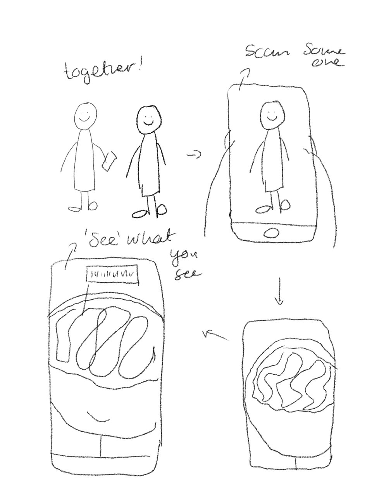
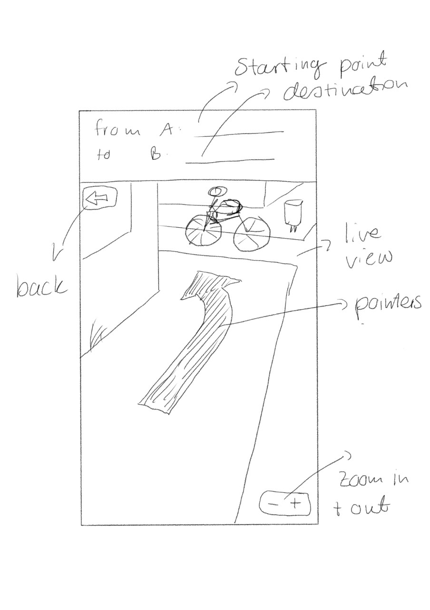
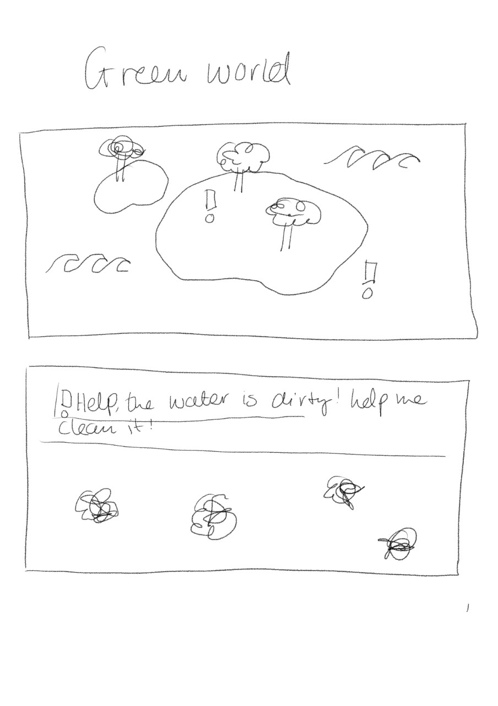
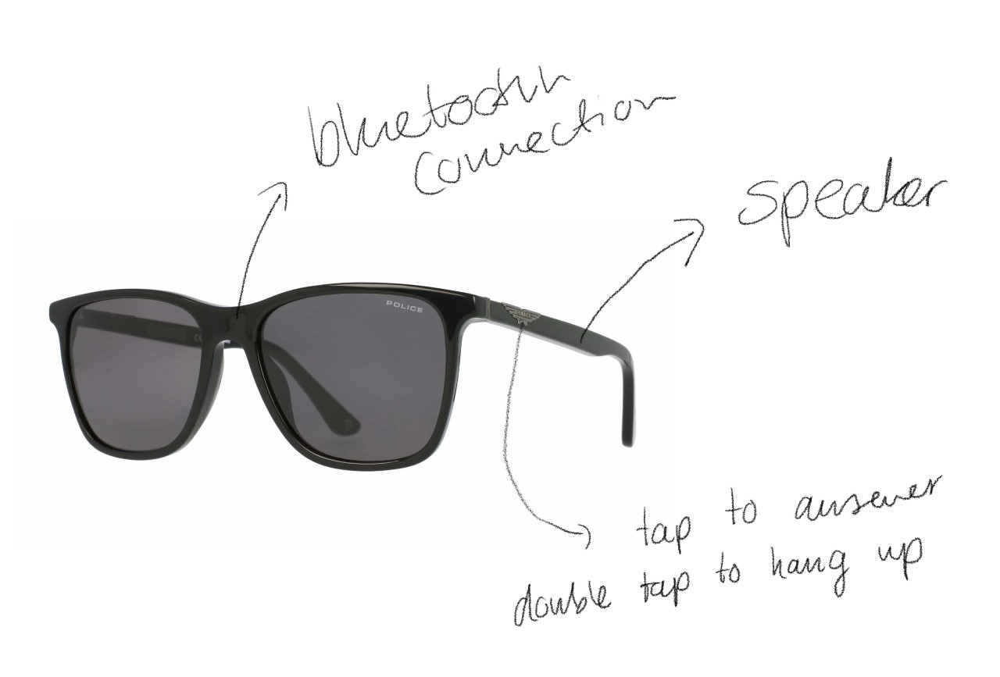
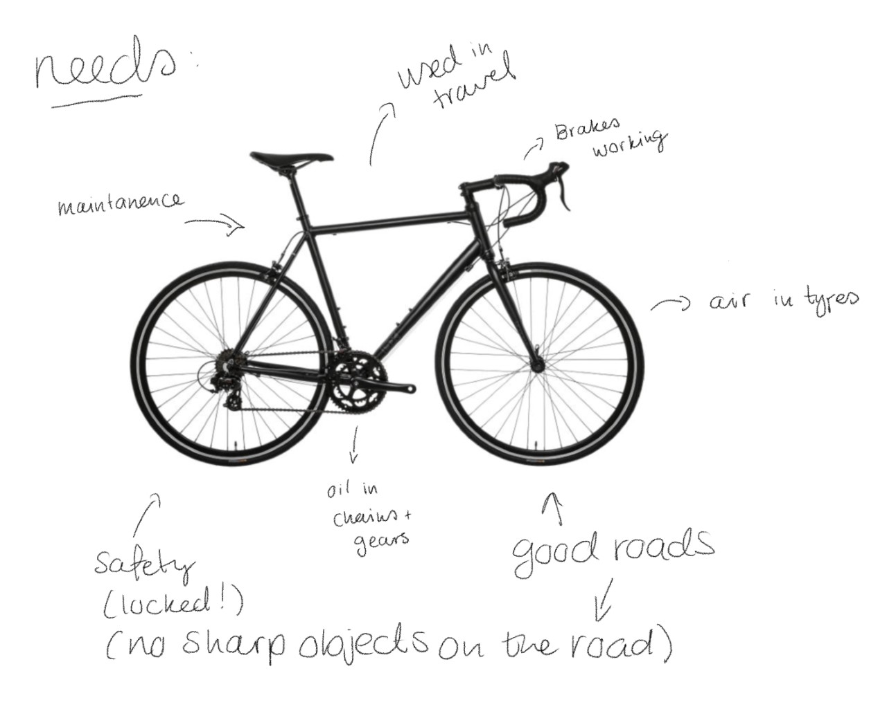

Topics
So, what is AR/VR? Well, Augmenten Reality (AR) is a mix between the virtual and real world and brings digital images or data onto real-world objects and spaces, while Virtual Reality (VR) is all about the virtual world. An example of AR that most of us know is the Pokémon Go app. When you hold up your phone you see the space as it actually is, but also the Pokémon you can catch, which definitely does not exist. VR is immersive and can make you think you are actually in the space you see, so basically a simulation.
I'm going to think of a concept for a couple of themes:
Healthcare - 'Where is my organ?'

For medical students who need to learn about anatomy, this might be a good solution if there aren’t enough ‘real life’ examples. By using a smartphone to discover where certain body parts are in realtime, we can eliminate the need for ‘real life’ examples. The way it works is kind of like a scanner. Using the camera on a smartphone you can ‘see’ someone’s organs. Zooming in will give names and detailed descriptions, so that learning about them will become more interactive and fun without having to deal with actual dissection.
Public transport - 'Show Me The Way'

Show me the way will show you the way from point A to B. Maps are great, but if you’re not a great map reader then not so much. By using the camera and location on your phone, the app will guide you to your next destination with on-screen directions. For instance, if you need to take the next right, an arrow will point you around the next corner. This eliminates the chances of getting lost or misreading a map.
Environment - 'Green World'

GreenWorld is a VR game. You start with your own little island and the goal is to get it from dirty (polluted) to green (healthy, healthy green). On the island there are all sorts of landscapes that represent the real world. In mini games you learn how to take care of your landscapes. So a garden should be kept up, a beach cleaned, windparks built, etc. Along the way, players will learn about the environment and that every action has consequences, be they negative or positive. By doing this with your ‘own two hands’ I hope to inspire people to practice what they learn in the game in real life.
Further research
When you start looking online for VR/AR projects, you will find the most amazing things. Compared to AR/VR a couple of years ago, there have been some enormous changes and it seems that this is the future. Most companies are starting to incorporate it into their business model. Disney has found a way to bring colouring books to life (see video), L’Oreal lets users try out makeup online and buying a pair of glasses without ever physically trying them on but knowing they look good on you is now more relevant than ever. Games are becoming more and more realistic, to the point that people get confused between what is fake and what is real. Like, actual harnesses built to stop you from falling or walking away. But isn’t it amazing? Being able to move around in a fantasy world as though you’re actually in it?!
The Virtuix Omni One, like the Omni Arena, lets you experience games as though you're part of it.
Wearables are exactly what they sound like. It’s all about technology that we can wear.
The most obvious example is a Fitbit, a watch-like device that not only tells you the time, but measures the amount of steps you take, the calories you burn, your heart rate, etc. It keeps track of you and helps you on your journey of fitness. But wearables can go further. They can take form in clothes, helmets, tattoos, earrings, the list goes on and on. For this topic we were asked to choose a case. Case one: think of a fresh new way to make phone calls that takes a step away from a 2D touch screen. Case 2: think of a way we can show emotion with a wearable by use of brainwaves to improve social interaction. I’m gonna go for the former.
So how do you reimagine your phone without an interface? Once upon a time when the phone rang, all you could do was either ignore it or physically pick it up. While on the phone with someone, you could only go as far as the phone line was. With smartphones we can talk to anyone on the go, we can put it on loudspeaker or connect it to our headphones and continue doing whatever we were doing before we were called.
I want a fusion between the two, without the distraction of an interface and the immobility of a phone. So a bluetooth connection seems like the most logical thing. But a bluetooth connection to what? What would users want to wear? And how could the user hear and speak to someone without physically holding something to their ear?
Lots of people wear (sun)glasses, which are conveniently near the ear and mouth. It’s something you would wear outside and on the go, which fits with the idea of hands-free calling. The piece near the ear would vibrate with an incoming call and if you want to call someone, you just call your glasses by the name and ask them to call so-and-so (kinda like Siri or Alexa).

Further research
When you google for the latest wearables you’ll find that most of them revolve around smartwatches and fitness trackers. To be fair, they are getting better and smarter. But I was a little surprised to see that clothing (which was always a bit of an abstract, far-off idea to me) is also making strides. Levi’s has a jacket with which you can control your phone. Even more surprising is that it’s being sold for a decent price. Less surprising is that it’s already sold out. Anyway, Levi partnered up with Google’s Jacquard to achieve this. And this is where it gets really interesting.
A Jacquard is a small device that will turn almost anything into a wearable, and it’s functions are adaptable. When I say small, I mean smol. Like, the size of the top of my thumb. On the back of the tiny computer there are a couple of electrodes that pick up touch. It’s also supposed to recognize what it’s being put into, be it a shoe, a jacket or a bag. I found this great TED talk by Ivan Poupryev. Here he explains about the Jacquard and about how the world could become our interface. He talks about how a thing should remain a thing, whilst the technology in it should make it better. Actually, I think this idea could go hand in hand with the next topic.
This week we were given a lecture on artificial creatures. These range from the most basic (a roomba) to a fully functioning robot (Sophia the robot). Now, artificial creatures are not sentient, as in, they don’t know or feel emotion. That’s a very human thing. As we progress in technology and the way we interact with it, we have started to give our artificial creatures the ability to recognize emotions and react to them, and the other way round. This is because we humans are so used to emotion that it’s weird if we interact with something that doesn’t have it. At least long term. It’s more authentic if they sound and maybe even act like us.
So the assignment for this lecture is to choose an object and apply the homeostasis modelto it. So I chose a bike and thought of it’s possible needs:

A bike is needed for travel. So it’s primary need would be to be used for biking. This is what would make the bike the happiest. Obviously this bike is meant for some serious work, so it would be ecstatic when it’s going very fast. Sitting at the back of a shed would make it very sad.
To go very fast, the bike needs to be used on good roads. It would become agitated if the roads are not very good, because it wouldn’t feel very good on it’s tyres. It might get slowed down, and that can be frustrating when all you wanna do is go as fast as you can. If it’s tyres get soft, it would probably also get frustrated. It is so much easier to get around on properly pumped up tyres! We just rode through some glass and now we have a flat tyre. The bike would now be in a lot of pain and be sad because it can’t go any further and has to be walked to the destination or the nearest repair shop.
If not properly maintained, the bike would be disgruntled by the lack of care. Rusty chains and gears make for a rough ride. It would be a little angry at that. It would also feel a little panicked if it’s brakes don’t work properly. What if it can’t brake in time and it crashes into something/someone?
Finally, it would feel a lot safer if it was double locked at night (but it would much rather stay inside with you). It would feel very unsafe if you left it outside, unlocked, even for a few minutes. It’s a very nice bike and wants to stay with you.
Further research
This was mentioned in the lecture so it doesn't count as my own research but I cannot get it out of my head. Spot the robot dog is so funny in this video, that I cannot let it go. What's good, fam? CARL!! (I must have watched this like a billion times now...) Anyway, because the robot's (voiceover) reactons to being pushed back or tripped up are so relatable, I feel more connected to it than if it were to just be silent. If it were silent it would probably frak me out a little bit. Here is this robot that can do things on it's own. Creepy! In this video (at around 1:27) we see the robot falling. And though it is simply hilarious, I can't help but feel sorry for it, even if I know it can't feel pain. But both videos are a true testament to the Boston Dynamics group and the work they do there.
Pepper the friendly robot is another amazing example of AC. She was designed by Softbank Robotics and has since then been a huge hit because of her ability to have whole conversations. She is programmed to socialize and inform people. She can recognise facial expressions and basic emotions.
It's far from perfected, but amazing!
Playful interaction is quite broad. It could be as simple as a card game and as complicated as a VR world. “Interactive play objects can stimulate social interaction and physical play by providing motivating feedback to players’ behavior; they can allow players to create their own game goals and rules in an open-ended play context and support social player interaction patterns.” (Designing playful interactions for social interaction and physical play by T. Bekker, 2010). An example of playful interaction is the famous Piano stairs, which was situated next to an escalator. The reason this example is so briliant is because it excerised just the right amount of curiousity to change people's mind about taking the escalator and taking the stairs instead.
The exercise for this subject is to think of a way to integrate playful interaction in the main building of the HHS to promote good behaviour. The one thing the main building has is a lot if stairs, though people prefer to take the elevator. That's why I thought it might be cool to turn the stairs into a game. A sensor at the bottom of the stairs triggers a timer and a sensor at the top of the stairs stops it again. So you really have to try your best if you want to be on the score board. Every week the board gets wiped so that everyone gets a bit more of a chance to end up on the board. Every step has an added bonus, if you step on the sticker, some time gets taken from your total. This is to promote getting fitter and not to be a lazy bum.
In my research I came across a lot of creative and beautiful installations. My favourite one was The Breath of Light by the glass manufacturer Preciosa.

"As strangers shared a breath, they also exchanged a smile as a magical wave of light and sound rolled through the interactive installation and lit up the room. Much like the eyes of visitors as they experienced Breath of Light for the first time. They want to connect people through light by bringing the chandelier down to a personal level. Breath of Light is a unique and playful experience that unites people with a surprise and a smile."